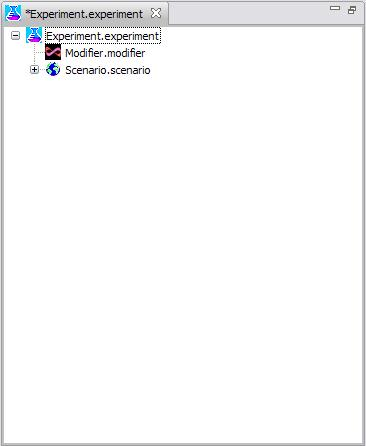

The Experiment Editor is used to edit Experiments. It supports drag and drop, and undo.
A Experiment can be dragged from a project's collection or from the Experiments View. Similarly, a Scenario can be dragged from a projects collection or from the Scenarios View, and a Modifier can be dragged from a projects collection.
